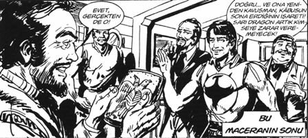

Hıdır, Demirci’deki bütün akrabalarını bir günde dolaştı. Saime Yengesi’ni, Nurullah Eniştesi’ni, Zinnur Eniştesi’ni, Hakkı Dayısı’nı, Nuri Dayısı’nı, Kuruları, Abozoları. Hafız Amca’nın, Didar Teyzesi’nin, Yusuf Eniştesi’nin ellerini öptü. Akşam Nuri Özdil, İsmail Karpuzcu, Döllerin Ahmet, Osman Barışık, Amcaoğlu Ahmet hep beraber Belediye Parkı’ndaki kahveye gittiler.
Sohbet, muhabbet. Bayram namazından sonra mezarlığa gidişleri, şafak doğarken, mezarlıktan çıkan topal hortlağı görünce kaçışları akıllarına geldi; günlerce kimseye anlatamamışlardı, ta ki mezarlığın bekçisi Topal Şerif’in adını duyana dek. İsmail’in iddia üzerine postaneye girip “Pazar günleri posta koyuyor musunuz?” diye sorup patak yiyişini hatırladılar.
Hıdır’ın aklı, arkadaşı Talat Saygılı’daydı. Minnetler Köyü’ne sabun yapımı üzerine eğitim vermeye gitmişti. Sabah Demirci’de olacaktı.
Anneannesinin ahşap evinde asma kokularını hissederek uyudu. Sabah erkenden kalktı, çeşmesinden su içilen bir yerde yaşamanın güzelliğini tadarak kuzeni Remzi’yle kahvaltı ettiler.
Evden çıkıp Kavaklı Camii’ne doğru yürüdü. Çocukluk arkadaşı Talat Ağabey’le buluşmaya. Talat’la neredeyse yaşıttılar; ama çocukluklarından beri ona, Talat Ağabey derdi, saygısından.
Caminin avlusunda birbirlerine sarıldılar. Çocukken üstünde oldukları dut ağacının şimdi altındaydılar.
– Çok mutsuzum be Talat Ağabey.
– Nedir Hıdır?
– Neredeyse 15 yıldır aynı iş yerinde, gram ilerleyemedik. Yaptığın iş ne dersen hiçbir şey ürettiğim yok. Hanımın gözünden iyice düştük, söylemese bile içinden “Bundan bir halt olmaz” diye düşünüyor. Anlayacağın tıkandım kaldım.
– Kadınlar görüntüleri kadar, erkekler yapabilecekleri kadar güç taşırlar.
– ... Benim yapabildiğim de bu kadar.
– Benim tanıdığım Hıdır’ın yapabilecekleri bu kadar olmadı hiç.
– Bu devlet hizmeti bitirdi beni ağabey. İşte rutin, evde rutin. Sonra baktım hiçbir şey üretemez bir adam oldum. Sen ne yaptın Allah aşkına. Yurt dışında mastır bursu kazan, orada birinci ol. Sonra çık gel kasabada imam ol, iş mi?
– Hıdır, bir şekilde orada yaşardım; ama uygun toprağa ekilmemiş çiçeklerden farkın kalmıyor bir süre sonra.
– Döndükten sonra niye İstanbul’a yerleşmedin?
– Korkunç oralar be Hıdır. Bir arkadaşım anlattı; trafikteki arabaların % 50’sinde, ya silah ya sopa, adam dövmeye uygun bir şey var. Böyle bir nefretin olduğu yerde insan insanlığını unutur diye düşündüm.
– 15 yıl önce böyle değildi farkında mısın?
– Aslında buralarda hâlâ öyle değil; ama buraları da ele geçirmek üzereler.
– Nasıl?
– Bak Hıdır. Fark ettin mi, İkiz Kulelere saldırdıklarında, bizim başkan Bush “Bu Amerikan yaşam biçimine bir saldırıdır” dedi. Çok ilginç bir cümle değil mi? Ülkeme, yurduma, insanıma demiyor. Amerikan yaşam biçimine diyor.
Gelecekteki sistemi neyin üzerine kuracakları belli. Bu ülke her üç dakikada bir, bir kadına tecavüz edilen bir ülke. Her dört saniyede bir suç işleniyor. Geceleri kimse sokağa çıkamıyor. Zencilerin nasıl aşağılandığını görsen inanamazsın; ama dünyaya “yaşam biçimi” satıyorlar.
İkiz Kulelerde 2.000 kişi öldü. Bunların Afganistan ve Irak’a saldırılarında 600.000-700.000 sivilin öldüğü söyleniyor. Şimdi Arap MTV’si kuruyorlar. Çünkü yaşam biçimini benimsetemedikleri adamı yönetemeyeceklerini fark ettiler.
– Talat Ağabey şimdi sen söylerken fark ettim. Babam hep anlatırdı, Ankara Radyosu kurulduğunda Amerikalılar 5.000 plak hediye etmişler. Babam hep “Türkiye’ye ilk adımı atışları odur!” derdi.
– Doğru, müthiş bir tespit. O yaşam biçimi dedikleri şey aslında tüm ürünlerini kullanmaktan geçiyor. Bak, Kuzey Kore’deki rejimle Çin’deki rejim arasında, İran ve Irak’taki yönetimle Suudi Arabistan, Kuveyt arasında hiçbir fark yok. Hatta İran’da seçim varken Arabistan’da, Kuveyt’te, Birleşik Arap Emirlikleri’nde seçim, demokrasi falan yok. Çin’deki nükleer silah miktarı Kuzey Kore’nin bin katı. Tek fark Kuzey Kore, İran ve Irak’a Amerikan şirketleri giremedi. Çin, eğer Amerikan şirketlerine 1.2 milyarlık nüfusunu pazar olarak açmasaydı, onlar da bugün terörist devletti. Bütün sistem bunun üzerine kurulu. Dünyada 860 milyon aç insan var. 640 milyon evsiz insan var. Hâlâ Amerikan yaşam biçiminden bahsediyorlar. ABD’nin 350 milyar dolar dış gelir fazlasının yarısı bilgi teknolojilerinden, windows falan, diğer yarısı silah satışından geliyor. Eğer geniş çaplı savaşlar olmazsa, bu geliri kaybedecekler. Afganistan ve Irak’ın işgali olmasa, ekonomilerinin zora gireceğini tüm ekonomistler söylüyor. Üç sene içinde bir terörist saldırıya daha ihtiyaçları var.
– Talat Ağabey çok ilginç şeyler anlatıyorsun; fakat TV’de, gazetede dış ilişkiler üzerine o kadar yazı çıkıyor; hep tırı vırı şeyler. Hiç bunları anlatmıyorlar niye?
– ?
– Ağabey, sen öyle dinî inançları müthiş bir adam değildin, nereden çıktı bu imamlık? Şaka zannettim valla.
– Yani hâlâ da, ben var ya ben, müthiş inanırım diyemem. Fakat burada bu kadar inançla iç içe olmak, hem öğrenmemi artırıyor hem de daha fazla sorgulamamı sağlıyor. Çok vaktim var, çok okuyorum. En sevdiğim de ne biliyor musun? Yüzlerce yıllık bir geleneği sürdürüyorum. Küçükken oruç tutarken de onu fark ederdim. Aynı değerleri paylaştığın birçok insanla beraber olmak çok değerli. Aslında İstanbul için ana neden bu. Ortak değerleri olmayan insanlar bir şehri ancak bu kadar mahvedebilir ve yaşanmaz hâle getirebilirler.
– ...
– Hıdır, bir diğer neden de bu sene dünyadaki buzulların % 18’i eridi. Bu ne demek biliyor musun? Benim makam, şu önümüzdeki 20 yıl için oldukça iyi bir yer gibi görünüyor.
– Pıh pıh pıhh.
– Peki sen ne yaptın mutsuzluğun için?
– Ağabey, son dönem yüzlerce kişisel gelişim kitabı okudum.
– Nasıl geliştin mi bari?
– Kafayı fazla takınca kötü oldum be Talat Ağabey. Sonra baktım çoğu birbirinin aynı. Bir de bizim hayatımızla ve kültürümüzle gram alakası yok. Yazan adamlar maşallah çok başarılılar! Hepsi üne kavuşmuş, artık Ferrari’yi satacak noktaya gelmişler. Biz daha aracı bakıma sokarken maddi strese giriyoruz.
– Amerika’dayken en çok fark ettiğim o oldu. Herkeste böyle bir kişisel gelişeyim, başarayım; ama bunu kişisel yapayım çabası var. Bu kişisel gelişim sistemi “Looser” dedikleri adamlar üzerine kurulu.
– Kim ağabey bunlar?
– Mesela sen! Kaybedenler. Toplum kaybedenlerle dolu. Filmlerde, dizilerde 100’e yakın başarılı adamı, onların hayatlarını, arabalarını, düzdükleri mankenleri gösterip dururlar. Saatler, pahalı cep telefonları, şaraplar, partiler... Herkes onlara özenir. Tüm bu insanlar genç ve mutludur. Seks yaparlar. Toplumun geri kalan % 99’u ise “kaybedendir.” Sıradan işlerde, sıradan hayatlar yaşarlar. Bu kaybedenler “Ben nasıl onlar gibi olabilirim?” koşusuna girerler. İşte tam bu noktada onlara nasıl başaracaklarını anlatan sihirli formüller devreye girer. Krem sürerek güzelleşeceklerine, kitap okuyarak başaracaklarına inanan insanlara mucizevi seminerler, kitaplar satarlar, 100 adımda zengin olmanın yolu gibi.
Etraf o kadar çok güvensiz insanla dolu ki giydikleri markalarla özdeşleşerek güven hissedecek gençler... Mutsuzluktan kırılıp “happy meal menü” yiyerek mutluluğa ulaşacağını zanneden kaybedenler... Her şişmanın bir “AB shaper”ı olmalı. O ürünlerde herkes genç ve mutludur. Her şey pozitif enerji üzerine kuruludur. Oysa kitabı kapattığında dönüp bir bakarsın, hayatın içinde mutluluk olduğu kadar mutsuzluk da var. Hamburger menüyü yiyip kolanı içtikten sonra elinde ketçaplı peçeteler, ciddi bir fatura, koşu bisikletleriyle verilemeyecek kalori ve kalp damarlarında biriken doymuş yağ oranlarını göstermezler hiç. Hep mutluluk vardır. Geçen fark ettim; bir süpermarkette çocuk bezlerinin üzerinde bin bebekten birinin olabileceği kadar güzel bebekler ve yüz bin anneden birinin olabileceği kadar güzel genç anneler birbirlerine sarılmış gülüyorlardı. Tezgâhın alt köşe raflarında yetişkin bezi vardı. Onun üzerinde altını bağlamak zorunda kalacağınız, yaşlı bitkin adamın resmi yoktu. Her bebeğin girdiği evde bir tane de o yaşlıdan olabilir. Sırf şu mahallede üç tane yatalak hasta var Hıdır.
Numaraları bu işte. Filmlerde, kitaplarda, gazetelerde o insanlar yok. Bizi de o sisteme sokuyorlar. Büyük şehirlerde “kaybedenler” yaratıyorlar. Onlar kadar büyük pazar olamaz. En büyük tüketiciler onlardır. Hayatından tatmin duyan, kendinden memnun birisi çılgınca satın almaz.
Türkiye’de ilk defa bu sene anti-depresan ilaçların satışı, antibiyotik satışını geçti. Her şey kendinden memnun olmaman, başka biri olmak istemen üzerine kurulu. Modellediğin adam gibi olmak, onun gibi giyinmek, saçını onun gibi boyatmak, onun gibi içmek ve hep markaları konuşmak.
Asıl mutsuz onlar! Bak, bir kasırga yaşadılar, herkes birbirinin evini dükkânını yağmaladı New Orleans’ta. Durduramadılar, insanları vurdular yağmayı durdurmak için.
Bugün bu kasabada öyle bir şey olsa, herkes birbirine yardım eder. Biri hastalansa herkes çorba götürür. Ya İstanbul’da? Orası artık onların başkenti. Tüm TV’ler İstanbul için yayın yapıyor. Aslında televizyonların gösterdikleri değil, insanların seyretmek istedikleri korkunç. Üç dakikada bir, bir kadına tecavüz edilen bir ülkenin ihraç ettiği yaşam biçimi korkunç. Kendi paçanı kurtar, fırtınada komşunun evini yağmala. Kocaeli depreminde beline kiriş devrildiği için kıpırdayamayan kadına tecavüz eden, bozuk telaffuzlu üç adamı bu sistem yarattı. O itler, karanlıkta, okudukları gazetenin arka sayfasında, sağ üst köşedeki mankeni gördüklerini sandılar; TV’deki programda yine sevgilisinden ayrılmış mankeni gördüklerini sandılar; hiç dedelerinin, ninelerinin boşlukta uğuldayan “Komşun açken, tok yatma!” sesini duymadı o sapıklar; 900’lü hatlardaki kadınların şuh sesini duydular. O kadını hiçbir psikiyatristin sözleri tedavi edemez Hıdır. Hiçbir gazetecinin lüks lokantalarda ücretsiz yiyip içirdiği, karşılığında anlattığı yemeklerden o kadın artık tat alamaz. Evlerin balkonlarındaki porno kanallara çevrili çanak uydu antenleri saldırdı o kadına.
Köylünün şehirli olması 120 yıl sürer. Süreyi, ürün satmak için kısaltmaya kalktığın an orada kalırsın, mutsuz olursun.
– Benim durum.
– Kitap okuyup, modelleyip, yeni araba alıp kendini başka biri gibi hissedip mutlu olacağını mı sandın bu arada?
– Aynen öyle.
– Hıdır, senin benim yaşımda insanı ne mutlu eder bilir misin?
– Ne?
– Kendi ürettiklerinin sonucunu görmek. Eğer dönüp baktığında, “Bunları ben ürettim, ben başardım, bu sonuçlar benim” diyebiliyorsan tamam. Yoksa etraf mutsuz insanlarla dolar. “Hayatında, başardığın ne var?” diye baktığımda, üç şey aklıma geliyor benim; eşin, Sîmin Nisan ve 91 model Şahin.
– Talat Ağabey, vallahi doğru! Üçünün de üzerine titriyorum.
– İş yerinde üretebileceğin bir şey var mı?
– Yok ağabey! Orada, sağcılar, solcular, masonlar, hemşeriler, tarikatçılar klanlar hâlinde yükselme savaşı veriyorlar. Üretim sıfır.
– Geçen gazetede haber vardı: Anası, babası bir çocuğu Çocuk Esirgeme Kurumu’na bırakıp gitmiş. Çocuk zatürre oluyor, hastaneye götürüyorlar. Benim bir tanıdığım zatürree oldu, 15 gün hastanede yattı. Bu çocuk kimsesiz ya, veriyorlar bir serum, gönderiyorlar geri, çocuk dönüşte ölüyor. Cenaze namazı vardı, fotoğraf çekilir diye oraya gelmiş altı devlet görevlisi. Çocuğu küçük bez bir kefene sarmışlar, mezarlığın duvarının üstüne koymuşlar, cenaze namazı kılıyorlar. Saatlerce ağladım. Şimdi ağladığıma bakma. Bu çocuk zengin olsaydı, ölmeyecekti. Ölse, gömülmesi böyle olmayacaktı. Hıdır ağlama; ama şunu bil: Ülke ihtiyaç içinde! Hiçbir şey üretemiyorsan, al hanımı, çocuğu git Çocuk Esirgeme Yuvalarına, bir şeyler anlat onlara, kitap oku. Senin benim gibi adamlar, saat markası, 100 metre kare daha büyük ev, yeni arabayla mutlu olmazlar. Senin için en büyük kişisel gelişim orada yanağına konacak bir öpücük. Ürettiğinin sonucunu bir hayır duasıyla orada alırsın. Öteki koşturmacanın sonu yok be Hıdırım.
– Ya ağabey imam gibi değil de, filmlerdeki rahipler gibi konuşuyorsun.
– Doğru, filmlerde bu adamların rahipleri hep iyi, bilge adam olur. Bizim imamlar da hep kötü adamdır.
– Oysa bizim dedeler anlatırdı, Kurtuluş Savaşı’nda Ege Bölgesi’nde halkı imamlar örgütlemiş, hep önde savaşmışlar, diye. Bir de ağabey, bu Amerikalıların kişisel gelişim kitaplarında hep İsa’dan örnekler var. “Hz. İsa böyle dedi, şöyle yaptı” gibi. Bizim kitaplarda hiç Hz. Muhammed yok.
– Ağabey deli misin? Kalkacak bir yazar, bir imamdan iyi bahsedecek. Adamın deli olması lazım. Öyle çok da inançlı falan olmasa ama kitabında “kültürümüzdür” deyip bir imamı devreye soksa, şu benim anlattıklarımı anlattırsa, bitirirler adamı valla. Bak bu benim söylediklerimin onda birini bir budist rahibe ya da papaza anlattırsın kral olur, bilge olur. Rahip dururken imam! Salaklık.
– Harbiden doğru! Adam manyak olacak ki öyle bir şey yapsın.
– Ya da kıt olması lazım, sonra başına gelecekleri görmeyecek kadar kıt. Dokunma suya sabuna!.. Yaz mutluluk, yaşam, pozitif enerji, çiçekti, böcüktü; bi de güldür milleti, malı götür.
– Talat Ağabey saatler geçmiş, benim otobüs kalkacak. Ağabey, çok sağ ol. Cidden geldiğime değdi.
– Söyledin mi eşinle kızına?
– Yok, hâlâ söylemedim.
– Niye?
– Ne bileyim ya! İyice gözlerinden düşersem.
– Başkası olup mutlu olacaksın ha? Ben direkt söylüyorum oğlum, çok rahatlatıcı. Bir tek ilk sefer zor.
– Belki söylerim; ama geç kaldık ağabey be! Evlenirken söylemek lazımdı.
– Arabayı ne yaptın?
– Ya bir modifiye ettirip “Doğan” görünümü vereyim diyorum, bir kararsız kalıyorum. Hadi ben fırlıyorum, görüşürüz.
Talat, Hıdır’ın arkasından yokuştan aşağı bağırdı:
– Aracın orijinalliğini bozma! Sadece tüp taktır, yakışı çok azalıyormuş!
“Hey, bu kulağa harika geliyor! Kendim için şimdiye kadar hiç bu kadar yaratıcı bir şey yapmamıştım. Gerçekten kendimi daha fazla zorlamaya başlamam gerekiyor.”
“Kabul ediyorum. Öğrendiğim oldukça etkili diğer bir teknik Hayaller Defteri’ne arzu ettiğin şeylerin ve başka birinden daha iyisini yapmak istediğin konularda becerilere, yeteneklere ve niteliklere sahip olan kişilerin resimlerini çizmektir. Senin durumuna, belindeki “otomobil lastiğine” geri dönecek olursak, kilo vermek ve fiziksel olarak çarpıcı görünmek istiyorsan, bir maraton koşucusunun ya da seçkin bir sporcunun resmini Hayaller Defteri’ne yapıştır.” [21]
